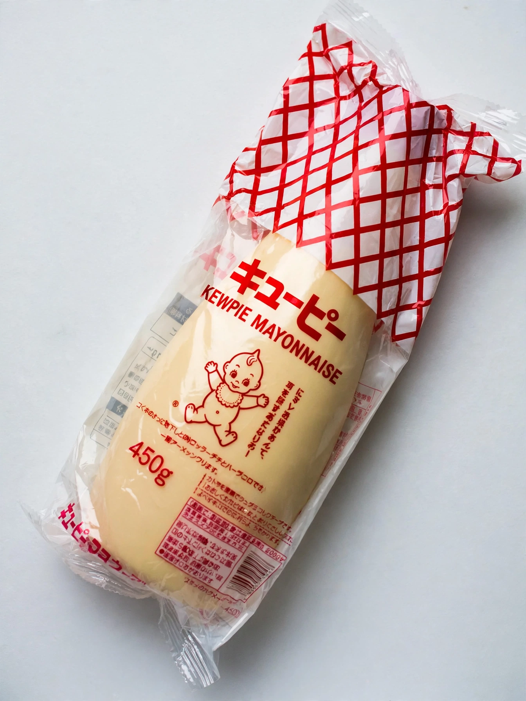

Kewpie

Founded: 1919 (as Tokyo Food Corporation)
Headquarters: Shibuya, Tokyo, Japan
Product: Kewpie mayonnaise (from 1925)
Mascot: Kewpie doll
Kewpie (キユーピー) is a Japanese food manufacturer best known for Kewpie mayonnaise, Japan's best-selling mayonnaise brand. The company was founded in 1919 by Toichiro Nakashima and launched its mayonnaise in 1925, taking its name and logo from the Kewpie doll, a cherubic character created by American illustrator Rose O'Neill in 1909.
Kewpie mayonnaise
Unlike most Western mayonnaises, Kewpie is made with egg yolks only rather than whole eggs, and with rice vinegar (in Japan) or apple-cider/distilled vinegars, plus a flavouring that includes monosodium glutamate. The result is a richer, creamier, more umami-flavoured and slightly sweeter mayonnaise, sold in a soft squeeze bottle inside a distinctive red-grid plastic wrapper bearing the naked Kewpie doll.
Use and popularity
In Japan Kewpie is used on takoyaki, okonomiyaki, salads, sandwiches and as a dip; a devoted domestic subculture of heavy users is jokingly called mayolers. From the 2010s, chefs and food media abroad adopted it enthusiastically, and it became a fashionable ingredient in North America and Europe, sold in Asian groceries and increasingly in mainstream supermarkets. The company also produces salad dressings, jam, pasta sauces and baby food.